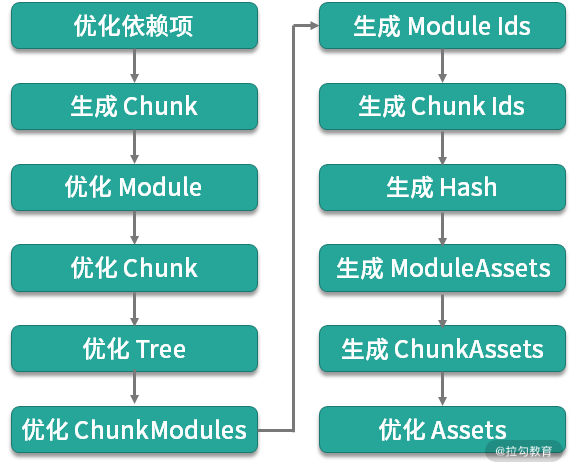
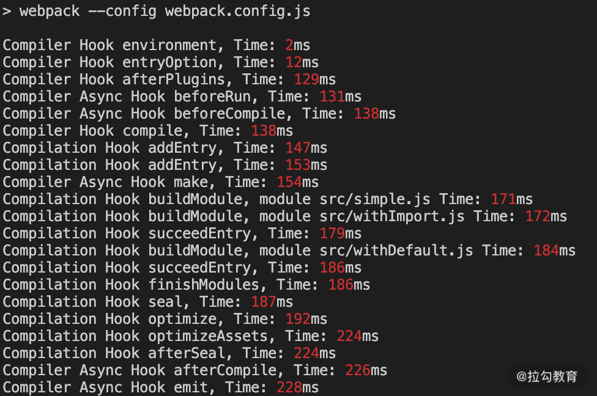

- 00 开篇词 建立上帝视角，全面系统掌握前端效率工程化.md.html
- 01 项目基石：前端脚手架工具探秘.md.html
- 02 界面调试：热更新技术如何开着飞机修引擎？.md.html
- 03 构建提速：如何正确使用 SourceMap？.md.html
- 04 接口调试：Mock 工具如何快速进行接口调试？.md.html
- 05 编码效率：如何提高编写代码的效率？.md.html
- 06 团队工具：如何利用云开发提升团队开发效率？.md.html
- 07 低代码工具：如何用更少的代码实现更灵活的需求.md.html
- 08 无代码工具：如何做到不写代码就能高效交付？.md.html
- 09 构建总览：前端构建工具的演进.md.html
- 10 流程分解：Webpack 的完整构建流程.md.html
- 11 编译提效：如何为 Webpack 编译阶段提速？.md.html
- 12 打包提效：如何为 Webpack 打包阶段提速？.md.html
- 13 缓存优化：那些基于缓存的优化方案.md.html
- 14 增量构建：Webpack 中的增量构建.md.html
- 15 版本特性：Webpack 5 中的优化细节.md.html
- 16 无包构建：盘点那些 No-bundle 的构建方案.md.html
- 17 部署初探：为什么一般不在开发环境下部署代码？.md.html
- 18 工具盘点：掌握那些流行的代码部署工具.md.html
- 19 安装提效：部署流程中的依赖安装效率优化.md.html
- 20 流程优化：部署流程中的构建流程策略优化.md.html
- 21 容器方案：从构建到部署，容器化方案的优势有哪些？.md.html
- 22 案例分析：搭建基本的前端高效部署系统.md.html
- 23 结束语 前端效率工程化的未来展望.md.html
- 捐赠
10 流程分解：Webpack 的完整构建流程
上节课我们聊了过去 20 余年里，前端项目开发时的工程化需求，以及对应产生的工具解决方案，其中最广泛运用的构建工具是 Webpack。这节课我们就来深入分析 Webpack 中的效率优化问题。
要想全面地分析 Webpack 构建工具的优化方案，首先要先对它的工作流程有一定理解，这样才能针对项目中可能存在的构建问题，进行有目标地分析和优化。
Webpack 的基本工作流程
我们从两方面来了解 Webpack 的基本工作流程：
- 通过 Webpack 的源码来了解具体函数执行的逻辑。
- 通过 Webpack 对外暴露的声明周期 Hooks，理解整体流程的阶段划分。
其中会涉及对 Webpack 源代码的分析，源代码取自 Webpack 仓库的 webpack-4 分支，而最新的 Webpack 5 中的优化我们会在后续课程中单独分析。
通常，在项目中有两种运行 Webpack 的方式：基于命令行的方式或基于代码的方式。
两种示例的代码分别如下（具体示例参照 10_webpack_workflow）：
//第一种：基于命令行的方式
webpack --config webpack.config.js
//第二种：基于代码的方式
var webpack = require('webpack')
var config = require('./webpack.config')
webpack(config, (err, stats) => {})
webpack.js 中的基本流程
无论用哪种方式运行 Webpack，本质上都是 webpack.js 中的 Webpack 函数。
这一函数的核心逻辑是：根据配置生成编译器实例 compiler，然后处理参数，执行 WebpackOptionsApply().process，根据参数加载不同内部插件。在有回调函数的情况下，根据是否是 watch 模式来决定要执行 compiler.watch 还是 compiler.run。
为了讲解通用的流程，我们以没有 watch 模式的情况进行分析。简化流程后的代码示例如下：
const webpack = (options, callback) => {
options = ... //处理options默认值
let compiler = new Compiler(options.context)
... //处理参数中的插件等
compiler.options = new WebpackOptionsApply().process(options, compiler); //分析参数，加载各内部插件
...
if (callback) {
...
compiler.run(callback)
}
return compiler
}
Compiler.js 中的基本流程
我们再来看下运行编译器实例的内部逻辑，具体源代码在 Compiler.js 中。
compiler.run(callback) 中的执行逻辑较为复杂，我们把它按流程抽象一下。抽象后的执行流程如下：
- readRecords：读取构建记录，用于分包缓存优化，在未设置 recordsPath 时直接返回。
- compile 的主要构建过程，涉及以下几个环节：
- newCompilationParams：创建 NormalModule 和 ContextModule 的工厂实例，用于创建后续模块实例。
- newCompilation：创建编译过程 Compilation 实例，传入上一步的两个工厂实例作为参数。
- compiler.hooks.make.callAsync：触发 make 的 Hook，执行所有监听 make 的插件（例如 SingleEntryPlugin.js 中，会在相应的监听中触发 compilation 的 addEntry 方法）。其中，Hook 的作用，以及其他 Hook 会在下面的小节中再谈到。
- compilation.finish：编译过程实例的 finish 方法，触发相应的 Hook 并报告构建模块的错误和警告。
- compilation.seal：编译过程的 seal 方法，下一节中我会进一步分析。
- emitAssets：调用 compilation.getAssets()，将产物内容写入输出文件中。
- emitRecords：对应第一步的 readRecords，用于写入构建记录，在未设置 recordsPath 时直接返回。
在编译器运行的流程里，核心过程是第二步编译。具体流程在生成的 Compilation 实例中进行，接下来我们再来看下这部分的源码逻辑。
Compilation.js 中的基本流程
这部分的源码位于 Compilation.js 中。其中，在编译执行过程中，我们主要从外部调用的是两个方法：
- addEntry：从 entry 开始递归添加和构建模块。
- seal：冻结模块，进行一系列优化，以及触发各优化阶段的 Hooks。
以上就是执行 Webpack 构建时的基本流程，这里再稍做总结：
- 创建编译器 Compiler 实例。
- 根据 Webpack 参数加载参数中的插件，以及程序内置插件。
- 执行编译流程：创建编译过程 Compilation 实例，从入口递归添加与构建模块，模块构建完成后冻结模块，并进行优化。
- 构建与优化过程结束后提交产物，将产物内容写到输出文件中。
除了了解上面的基本工作流程外，还有两个相关的概念需要理解：Webpack 的生命周期和插件系统。
读懂 Webpack 的生命周期
Webpack 工作流程中最核心的两个模块：Compiler 和 Compilation 都扩展自 Tapable 类，用于实现工作流程中的生命周期划分，以便在不同的生命周期节点上注册和调用插件。其中所暴露出来的生命周期节点称为Hook（俗称钩子）。
Webpack 中的插件
Webpack 引擎基于插件系统搭建而成，不同的插件各司其职，在 Webpack 工作流程的某一个或多个时间点上，对构建流程的某个方面进行处理。Webpack 就是通过这样的工作方式，在各生命周期中，经一系列插件将源代码逐步变成最后的产物代码。
一个 Webpack 插件是一个包含 apply 方法的 JavaScript 对象。这个 apply 方法的执行逻辑，通常是注册 Webpack 工作流程中某一生命周期 Hook，并添加对应 Hook 中该插件的实际处理函数。例如下面的代码：
class HelloWorldPlugin {
apply(compiler) {
compiler.hooks.run.tap("HelloWorldPlugin", compilation => {
console.log('hello world');
})
}
}
module.exports = HelloWorldPlugin;
Hook 的使用方式
Hook 的使用分为四步：
- 在构造函数中定义 Hook 类型和参数，生成 Hook 对象。
- 在插件中注册 Hook，添加对应 Hook 触发时的执行函数。
- 生成插件实例，运行 apply 方法。
- 在运行到对应生命周期节点时调用 Hook，执行注册过的插件的回调函数。如下面的代码所示：
lib/Compiler.js
this.hooks = {
...
make: new SyncHook(['compilation', 'params']), //1. 定义Hook
...
}
...
this.hooks.compilation.call(compilation, params); //4. 调用Hook
...
lib/dependencies/CommonJsPlugin.js
//2. 在插件中注册Hook
compiler.hooks.compilation.tap("CommonJSPlugin", (compilation, { contextModuleFactory, normalModuleFactory }) => {
...
})
lib/WebpackOptionsApply.js
//3. 生成插件实例，运行apply方法
new CommonJsPlugin(options.module).apply(compiler);
以上就是 Webpack 中 Hook 的一般使用方式。正是通过这种方式，Webpack 将编译器和编译过程的生命周期节点提供给外部插件，从而搭建起弹性化的工作引擎。
Hook 的类型按照同步或异步、是否接收上一插件的返回值等情况分为 9 种。不同类型的 Hook 接收注册的方法也不同，更多信息可参照官方文档。下面我们来具体介绍 Compiler 和 Compilation 中的 Hooks。
Compiler Hooks
构建器实例的生命周期可以分为 3 个阶段：初始化阶段、构建过程阶段、产物生成阶段。下面我们就来大致介绍下这些不同阶段的 Hooks ：
初始化阶段
- environment、afterEnvironment：在创建完 compiler 实例且执行了配置内定义的插件的 apply 方法后触发。
- entryOption、afterPlugins、afterResolvers：在 WebpackOptionsApply.js 中，这 3 个 Hooks 分别在执行 EntryOptions 插件和其他 Webpack 内置插件，以及解析了 resolver 配置后触发。
构建过程阶段
- normalModuleFactory、contextModuleFactory：在两类模块工厂创建后触发。
- beforeRun、run、watchRun、beforeCompile、compile、thisCompilation、compilation、make、afterCompile：在运行构建过程中触发。
产物生成阶段
- shouldEmit、emit、assetEmitted、afterEmit：在构建完成后，处理产物的过程中触发。
- failed、done：在达到最终结果状态时触发。
Compilation Hooks
构建过程实例的生命周期我们分为两个阶段：
构建阶段
- addEntry、failedEntry、succeedEntry：在添加入口和添加入口结束时触发（Webpack 5 中移除）。
- buildModule、rebuildModule、finishRebuildingModule、failedModule、succeedModule：在构建单个模块时触发。
- finishModules：在所有模块构建完成后触发。
优化阶段
优化阶段在 seal 函数中共有 12 个主要的处理过程，如下图所示：

每个过程都暴露了相应的 Hooks，分别如下:
- seal、needAdditionalSeal、unseal、afterSeal：分别在 seal 函数的起始和结束的位置触发。
- optimizeDependencies、afterOptimizeDependencies：触发优化依赖的插件执行，例如FlagDependencyUsagePlugin。
- beforeChunks、afterChunks：分别在生成 Chunks 的过程的前后触发。
- optimize：在生成 chunks 之后，开始执行优化处理的阶段触发。
- optimizeModule、afterOptimizeModule：在优化模块过程的前后触发。
- optimizeChunks、afterOptimizeChunks：在优化 Chunk 过程的前后触发，用于 Tree Shaking。
- optimizeTree、afterOptimizeTree：在优化模块和 Chunk 树过程的前后触发。
- optimizeChunkModules、afterOptimizeChunkModules：在优化 ChunkModules 的过程前后触发，例如 ModuleConcatenationPlugin，利用这一 Hook 来做Scope Hoisting的优化。
- shouldRecord、recordModules、recordChunks、recordHash：在 shouldRecord 返回为 true 的情况下，依次触发 recordModules、recordChunks、recordHash。
- reviveModules、beforeModuleIds、moduleIds、optimizeModuleIds、afterOptimizeModuleIds：在生成模块 Id 过程的前后触发。
- reviveChunks、beforeChunkIds、optimizeChunkIds、afterOptimizeChunkIds：在生成 Chunk id 过程的前后触发。
- beforeHash、afterHash：在生成模块与 Chunk 的 hash 过程的前后触发。
- beforeModuleAssets、moduleAsset：在生成模块产物数据过程的前后触发。
- shouldGenerateChunkAssets、beforeChunkAssets、chunkAsset：在创建 Chunk 产物数据过程的前后触发。
- additionalAssets、optimizeChunkAssets、afterOptimizeChunkAssets、optimizeAssets、afterOptimizeAssets：在优化产物过程的前后触发，例如在 TerserPlugin 的压缩代码插件的执行过程中，就用到了 optimizeChunkAssets。
代码实践：编写一个简单的统计插件
在了解了 Webpack 的工作流程后，下面我们进行一个简单的实践。
编写一个统计构建过程生命周期耗时的插件，这类插件会作为后续优化构建效率的准备工作。插件片段示例如下（完整代码参见 10_webpack_workflow）：
class SamplePlugin {
apply(compiler) {
var start = Date.now()
var statsHooks = ['environment', 'entryOption', 'afterPlugins', 'compile']
var statsAsyncHooks = [
'beforeRun',
'beforeCompile',
'make',
'afterCompile',
'emit',
'done',
]
statsHooks.forEach((hookName) => {
compiler.hooks[hookName].tap('Sample Plugin', () => {
console.log(`Compiler Hook ${hookName}, Time: ${Date.now() - start}ms`)
})
})
...
}
})
module.exports = SamplePlugin;
执行构建后，可以看到在控制台输出了相应的统计时间结果（这里的时间是从构建起始到各阶段 Hook 触发为止的耗时），如下图所示：

根据这样的输出结果，我们就可以分析项目里各阶段的耗时情况，再进行针对性地优化。这个统计插件将在后面几课的优化实践中运用。
除了这类自己编写的统计插件外，Webpack 社区中也有一些较成熟的统计插件，例如speed-measure-webpack-plugin等，感兴趣的话，你可以进一步了解。
总结
这一课时起，我们进入了 Webpack 构建优化的主题。在这节课中，我主要为你勾画了一个 Webpack 工作流程的轮廓，通过对三个源码文件的分析，让你对执行构建命令后的内部流程有一个基本概念。然后我们讨论了 Compiler 和 Compilation 工作流程中的生命周期 Hooks，以及插件的基本工作方式。最后，我们编写了一个简单的统计插件，用于实践上面所讲的课程内容。
今天的课后思考题是：在今天介绍的 Compiler 和 Compilation 的各生命周期阶段里，通常耗时最长的分别是哪个阶段呢？可以结合自己所在的项目测试分析一下。
© 2019 - 2023 Liangliang Lee. Powered by gin and hexo-theme-book.